广播对齐浮点存内计算零基础精讲：让浮点精度也拥有整数级能效 A 28nm 17.83-to-62.84TFLOPS/W Broadcast-Alignment Floating-Point CIM Macro with Non-Two's-Complement MAC for CNNs and Transformers（ISSCC 2025 · Paper 14.3）
之前的存内计算（CIM）大多只做整数（INT8），因为浮点（FP）的“指数对齐”和 CIM 的广播结构天生不合。本论文（东南大学司鑫组）在 28nm 上做了一个 64kb 浮点 CIM 宏，用三招化解浮点的三大难题：
- 广播输入 + 嵌入式轻量转换器（ESICU）：把浮点输入拆成“8b 并行指数 + 2b 串行尾数”，16 个阵列共享一份输入 → 输入复用性大幅提升；
- 嵌入式自适应 2b 串行对齐：用“倒计时器 + 比较器 + 寄存器链”替代“减法器 + 桶形移位器”，对齐电路面积 −36.23%；
- 格式混合非二进制补码 MAC（N2CMAC）：权重用符号-数值格式存储，把有符号 MAC 拆成“无符号 MAC + 符号补偿”→ 负权重位级稀疏性提升 1.83×，功耗大幅下降。
实测：BF16 模式 62.84 TFLOPS/W、INT8 模式 90.15 TOPS/W（FP32 输出，28nm）——把浮点精度做到了整数级能效。
- 浮点 = 指数 + 尾数：浮点数像科学计数法（1.25 × 2³）。乘法=指数相加+尾数相乘（简单）；加法=先“对齐”再相加（麻烦）。CIM 里的麻烦全来自“对齐”。
- 对齐为什么贵：传统做法给每个输入配一个“减法器+桶形移位器”做并行对齐——面积大、功耗高。本文换思路：用一个倒计时器统一节奏，所有输入“每周期移 2 位”，把对齐摊到多个周期（串行），面积就下来了。
- 负数的存储格式决定功耗：2 的补码里负数全是 1（翻转多、费电）；符号-数值格式只翻符号位（数值位保持稀疏）。换存储格式 = 直接省加法树功耗，这是 N2CMAC 的物理直觉。
§0.1摘要逐句精读
| 原文（摘录） | 人话解释 |
|---|---|
| “FP incurs higher energy and area overhead due to complex FP multiplication and accumulation (MAC) operations” | 浮点乘加比整数复杂（对齐、归一化、舍入），能耗和面积开销大——这是 FP-CIM 要解决的核心矛盾。 |
| “(1) the difficulty of balancing FP-computation precision and input reusability, as alignment operations are unfriendly to CIM structure” | 挑战 1：对齐依赖每个输入自己的指数 → 输入没法整齐广播复用，精度与复用率二选一。 |
| “(2) a large performance loss or area overhead due to peripheral parallel-alignment schemes” | 挑战 2：外围并行对齐（减法器+桶形移位器）要么吃掉面积，要么拖慢性能。 |
| “(3) huge digital-MAC dynamic-energy consumption due to low 2's-complement (2C) negative-weight sparsity, coupled with an additional sign-bit computation overhead” | 挑战 3：2 的补码格式负权重位级稀疏性差 + 符号位计算开销 → 数字 MAC 动态功耗高。 |
| “achieved an energy efficiency of 62.84TFLOPS/W for BF16 and 90.15TOPS/W for INT8” | 实测：BF16 62.84 TFLOPS/W，INT8 90.15 TOPS/W（28nm）。 |
§0.2论文的核心贡献清单
- 广播输入 + 嵌入式转换（ESICU）：GIN（8b 指数 + 2b 串行尾数）被 16 个 TS-A 共享，消除前作浮点输入无法跨阵列复用的利用率损失；
- 自适应 2b 串行对齐：SDT 倒计时 + EC 比较 + LC 存/移两态，对齐电路面积比传统方案 −36.23%；
- 格式混合 N2CMAC：符号-数值权重 + 无符号 MAC + 符号补偿，负权重位级稀疏性 1.83×，计算周期 −19.80%（8b 输入）/−16.50%（10b 输入）；
- 一芯四用：普通读写 + BF16A/BF16B/INT8 三种计算模式，BF16A/B 保留 10b/8b 对齐尾数分别服务 CNN 与 Transformer；
- 实测成绩：62.84 TFLOPS/W、697.17 GFLOPS/mm²、ViT @ImageNet 精度 79.818%、FoM 相对前作提升 1.93–116.90×。
完全零基础：按 01→09 顺序读，重点玩 3 个交互仿真、看 3 个视频，约 60 分钟。已经懂浮点/整数量化的：从 §5（串行对齐）和 §6（N2CMAC）开始，这两章是本文最核心的两个创新。
§1背景：为什么需要浮点存内计算（FP-CIM）
先回顾一个老问题：CIM 最擅长的是整数 MAC（§10 教程已经讲过）。但 AI 世界里不是所有任务都能量化成 INT8——训练、微调、Transformer/ViT 类网络对精度敏感，需要浮点（FP）。浮点虽然精度高，但它的乘法/累加比整数复杂得多（指数对齐、归一化、舍入），能耗和面积天然更高。
① 模型变大：LLM/Transformer 对量化误差更敏感，8bit 往往不够；② 训练/微调：梯度更新需要 FP 精度；③ 终端混合精度：同一芯片既要跑已量化的 INT8 推理，又要跑需要 FP 的层。所以“一个宏既支持 INT8 又支持 BF16”成为刚需——本文的“一芯四用”正是为此设计。
§2浮点格式与“指数对齐”难题
2.1 BF16 格式：1 符号 + 8 指数 + 7 尾数
本文支持 BF16（bfloat16），一种 16 位浮点格式，布局与 FP32 相同（8 位指数），只是尾数从 23 位砍到 7 位。好处：与 FP32 数值范围完全一致（指数一样），训练/推理时可以“直接截断转换”。
- 乘法：指数相加（简单）+ 尾数相乘（和整数乘法一样）；
- 加法/累加：两个数指数不同 → 小指数的尾数要右移对齐到指数大的那个 → 移位量 = 指数差（最大 8 位）→ 需要桶形移位器；
- 更麻烦的是 CIM 的 MAC 是把很多数一起累加：每个输入的指数不同，对齐量各不相同，还要在加法树里统一对齐——这就是“对齐与 CIM 广播结构冲突”的技术根源。
2.2 交互演示 A：亲手体验“指数对齐”
§3FP-CIM 的三大挑战（论文的问题定义）
论文 Fig. 14.3.1 把数字域 FP-CIM 的难题总结成三条，整篇论文就是围绕这三条展开的：
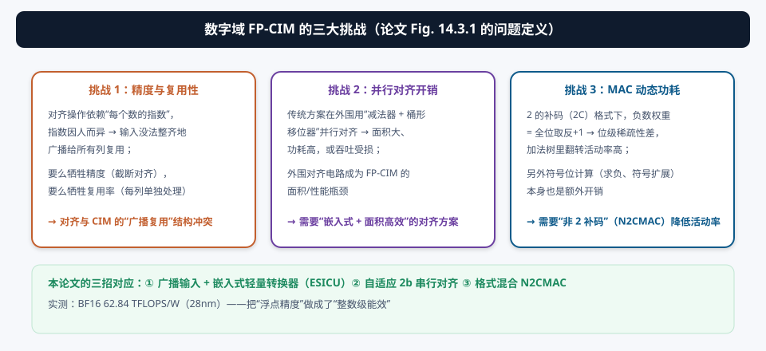
| 挑战 | 本质 | 本论文对策 |
|---|---|---|
| ① 精度 vs 输入复用性 | 对齐依赖各自指数 → 无法整齐广播 | GIN 拆分（8b 指数并行 + 2b 尾数串行）+ ESICU 嵌入式转换 → 16 阵列共享 |
| ② 并行对齐开销 | 减法器 + 桶形移位器面积大 | SDT 倒计时 + 2b 串行对齐 → 面积 −36.23% |
| ③ MAC 动态功耗 | 2C 负权重位级稀疏性差 + 符号开销 | 符号-数值权重 + 无符号 MAC + 符号补偿（N2CMAC） |
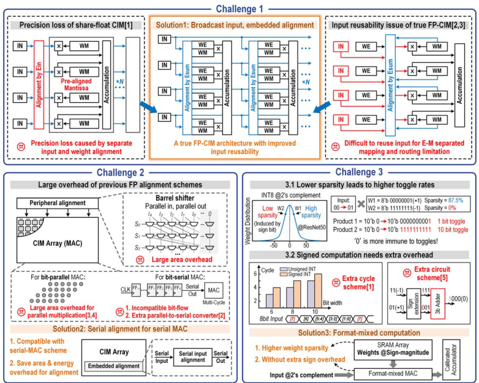
注意论文的写法：Fig. 14.3.1 先画问题（三座山），然后每个创新点（B-A-N2CMAC 的三个组成）正好对应一座山。这种“挑战 → 对策”一一对应的结构是优秀芯片论文的标配，也是你读其他论文时应该主动寻找的骨架。
§4宏架构总览：16 个三重堆叠阵列 + 层次输入缓冲

- 16 个 TS-A（三重堆叠阵列）：每个 TS-A 计算 1 个输出通道，内部 = 嵌入式串行输入转换单元（ESICU）+ 16×256 6T SRAM 阵列 + 格式混合非 2 补码 MAC 单元（N2CMACU）；
- 层次化输入缓冲：对外提供 GIN（Global Input）= 8b 并行指数输入 EIN + 2b 串行尾数输入 MIN；
- CA&Q（校准累加器与量化器）：负责多周期累加、符号补偿与量化输出（BF16A:23b / BF16B:21b / INT8:20b）；
- 外围电路：读写控制、列选择、三种计算模式配置。
前作 [2,3] 的浮点输入因为“每个输入要按自己的指数对齐”，没法直接广播给多个阵列 → 阵列利用率低（很多周期空转）。本文把输入拆成“并行指数 + 串行尾数”，指数走并行总线、尾数走串行流水，一份 GIN 同时喂 16 个 TS-A——复用率拉满，这是标题里 “Broadcast”（广播）的由来。
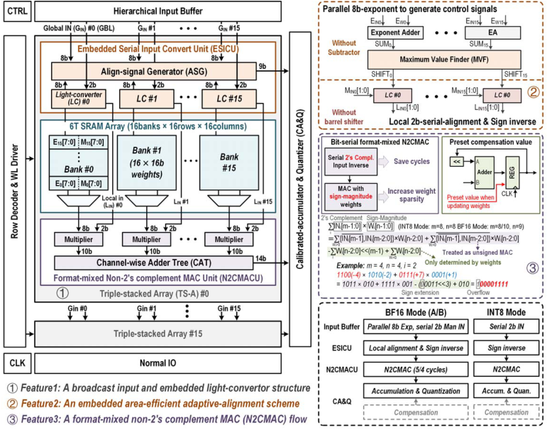
§5创新①：ESICU 与嵌入式 2b 串行对齐
5.1 ESICU 结构：ASG 定“何时移”，LC 干“怎么移”
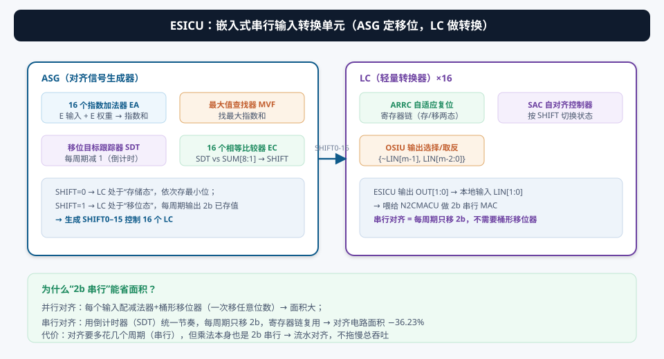
ASG（对齐信号生成器）：
- 16 个指数加法器（EA）：算“输入指数 + 权重指数”的和（浮点乘法的指数部分）；
- 最大值查找器（MVF）：找出 16 个指数和的最大值；
- 移位目标跟踪器（SDT）：从最大值开始，每个时钟周期减 1（倒计时器）；
- 16 个相等比较器（EC）：把 SDT 与各自的指数和高 8 位（SUM[8:1]）比较，生成 SHIFT0–15 控制信号。
LC（轻量转换器）：收到 SHIFT 后：SHIFT=0 → 存储态（把尾数最小位依次存进自适应复位寄存器链 ARRC）；SHIFT=1 → 移位态（每周期从链里移出 2b）；最后 OSIU 做符号处理输出 LIN[1:0]。
5.2 串行对齐的时间线：SDT 倒计时，全局同节奏
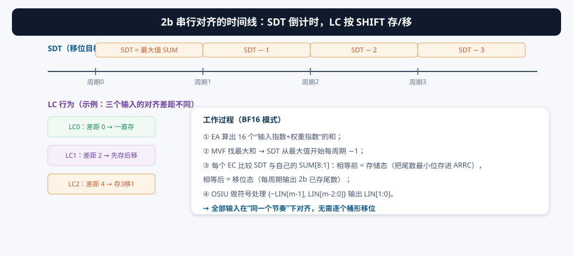
并行对齐 = 每个输入配一个桶形移位器（一次能移任意位数的电路，面积大）+ 减法器。串行对齐 = 用一个倒计时器（SDT）+ 16 个比较器 + 寄存器链，所有输入在同一个节奏下“每周期移 2b”——桶形移位器被换成了小移位链。代价是“对齐要多花几个周期”，但乘法本身就是 2b 串行输入的，对齐和乘法流水重叠，总吞吐不掉。净效果：对齐电路面积 −36.23%。
5.3 视频与仿真：看串行对齐跑起来
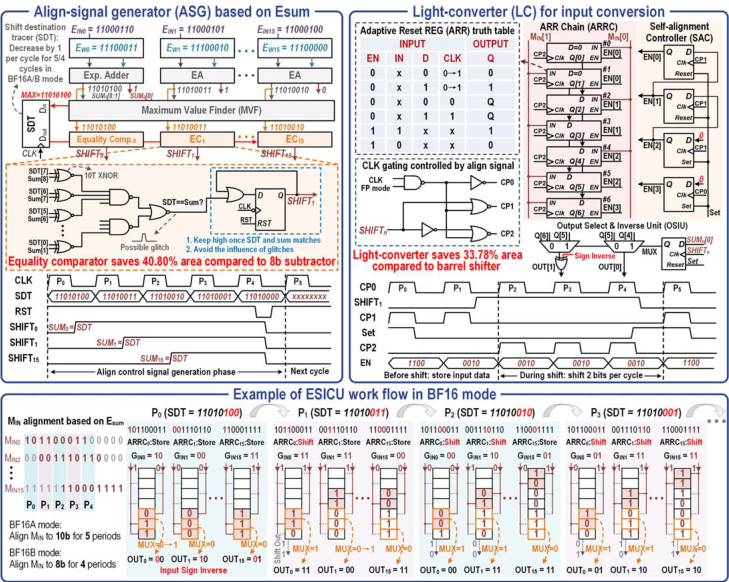
§6创新②：格式混合 N2CMAC —— 非二进制补码 MAC
6.1 符号-数值权重：负数的存储格式决定功耗
传统数字 MAC 用 2 的补码（2C）表示有符号数，负数 = 正数取反加 1 → 数值位被“填满 1”。在加法树里，全 1 的输入意味着每个周期大量位翻转 → 动态功耗高。本论文把权重改成符号-数值（sign-magnitude）格式：符号位与数值位分开存储，负权重只是“符号位 = 1”，数值位保持原样。
ResNet50 的负 INT8 权重在符号-数值格式下，位级稀疏性（为 0 的比例）相比 2C 提升 1.83×。稀疏 = 少翻转 = 少动态功耗——这是纯存储格式带来的“免费”省电。
6.2 有符号 MAC = 无符号 MAC + 符号补偿

数学上：A × W = A × |W| × sign(W)。于是：
- 无符号 MAC：DMU 只处理正尾数（权重数值位 × 输入），加法树不需要符号位扩展、求负等逻辑——省符号计算开销；
- 符号补偿：在 CA&Q 里统一加回。补偿值可以“多花 2 个周期算出”或“离线预置”，并且在多个计算周期之间共享——摊薄到几乎为零。
N2CMAC 让不同网络的所需计算周期减少：ViT（DeiT-S）@ImageNet 上 8b/10b 输入各减少 19.80% / 16.50%。电路层面：相比典型 2C MAC，功耗 −1.96×、延迟 −1.25×、面积 −1.18×。
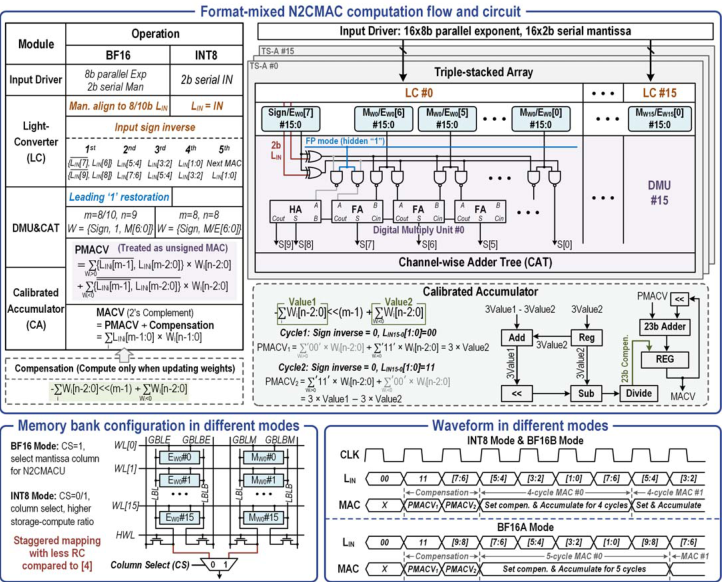
§7三种计算模式：BF16A / BF16B / INT8
7.1 一种硬件，三种精度
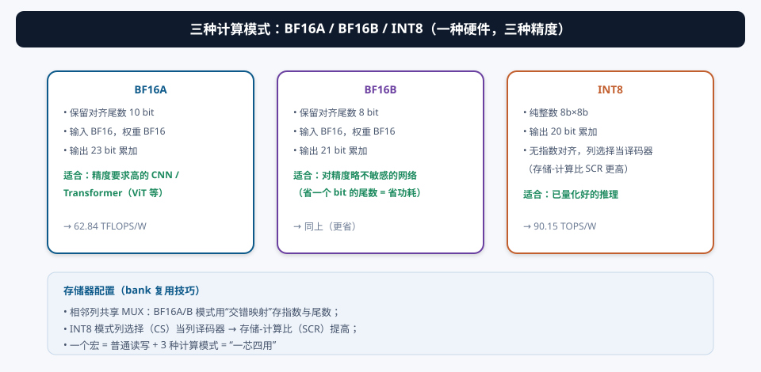
| 模式 | 输入/权重 | 对齐尾数宽度 | 累加输出 | 适用 |
|---|---|---|---|---|
| BF16A | BF16 × BF16 | 10 bit | 23 bit | 精度敏感的 CNN / Transformer（ViT） |
| BF16B | BF16 × BF16 | 8 bit | 21 bit | 精度要求略低的网络（省功耗） |
| INT8 | INT8 × INT8 | —（无指数） | 20 bit | 已量化好的推理 |
BF16A 和 BF16B 的区别只在“对齐后尾数保留多少位”：10b 保精度（Transformer 需要），8b 省功耗（CNN 够用）。论文实测 ViT @ImageNet 推理精度 79.818%——说明这个精度配置是够用的。
7.2 存储器配置与“一芯四用”
- 相邻列共享 MUX：BF16A/B 模式用交错映射存放指数与尾数（指数并行取、尾数串行取）；
- INT8 模式：列选择（CS）信号充当列译码器 → 提高存储-计算比（SCR），纯整数模式下的阵列利用率更高；
- 一个宏四种用途：普通读写 + 3 种计算模式，按网络层需求逐层配置。
§8实测与对比：28nm 芯片的成绩单
8.1 能效与面积效率
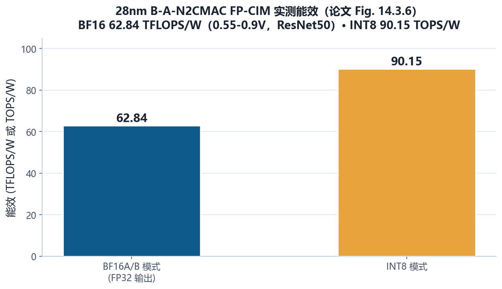
- 访问时间：5.4 ns @ 0.9V（BF16A/B 输入权重、FP32 输出）；
- 面积效率：697.17 GFLOPS/mm²（BF16A/B，峰值）；
- 能效范围：17.83–62.84 TFLOPS/W（标题里的范围，随电压/配置变化）；
- 精度：ViT @ImageNet 推理精度 79.818%；
- 工艺：28nm CMOS，64kb 宏。
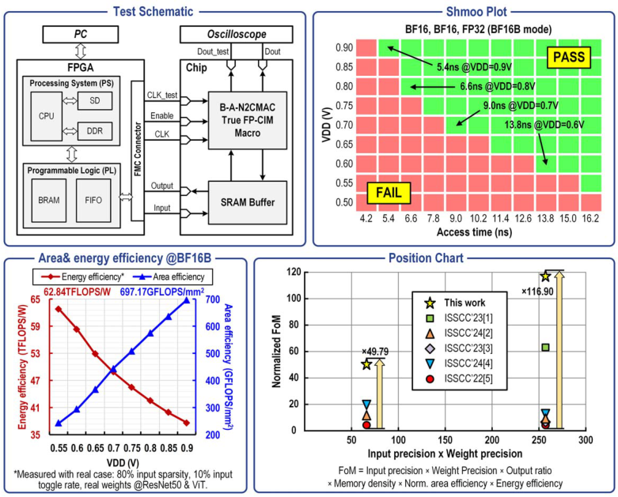
8.2 各项技术收益汇总
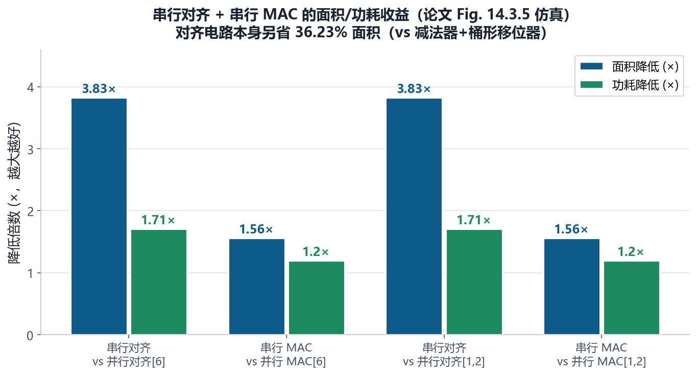
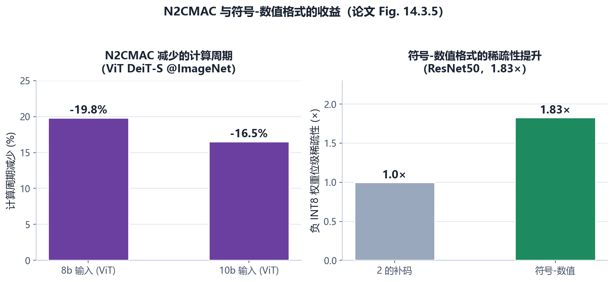
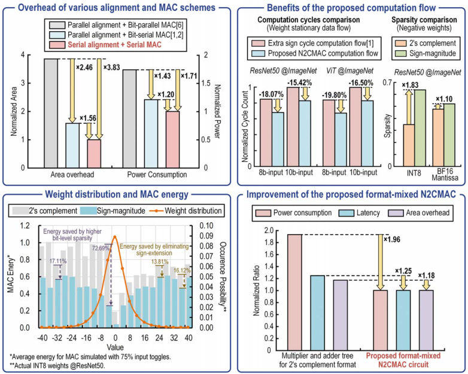
| 指标 | 数值 | 对比对象 |
|---|---|---|
| 对齐电路面积 | −36.23% | 传统减法器+桶形移位器方案 [1-6] |
| 串行对齐面积/功耗 | 3.83× / 1.71× | 并行对齐+并行 MAC [6] |
| 串行 MAC 面积/功耗 | 1.56× / 1.20× | 并行对齐+串行 MAC [1,2] |
| 计算周期 | −19.80% / −16.50% | 8b / 10b 输入（ViT DeiT-S） |
| 负权重位级稀疏性 | 1.83× | 2C 格式（ResNet50） |
| N2CMAC 电路功耗/延迟/面积 | 1.96× / 1.25× / 1.18× | 典型 2C MAC [1,2] |
| FoM（IN×W×密度×能效×输出比） | 1.93–116.90× | 前作 SRAM CIM [1-5] |
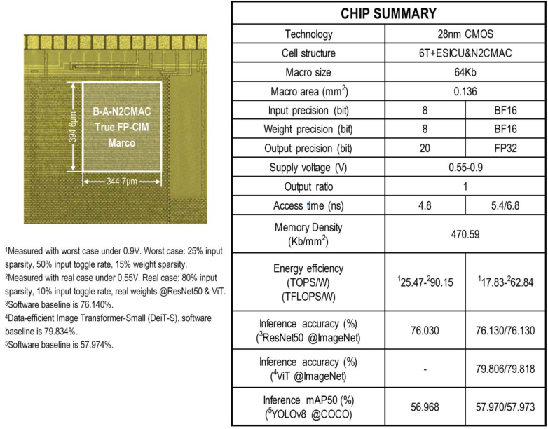
① “TFLOPS/W”和“TOPS/W”不是一回事：浮点运算计 FLOPs（1 MAC = 2 FLOPs），整数计 OPS——跨格式对比要小心；② FoM 把“输入精度×权重精度×存储密度×归一化能效×输出比”乘在一起，权重选择是作者定义的，数值跨度（1.93–116.90×）很大，说明对比对象跨度也很大；③ 79.818% 的 ViT 精度是“这个宏能跑出这个精度”，不代表网络最佳精度——读时注意区分。
§9未来研究方向 · 术语表 · 参考资料
9.1 未来研究方向
- 更低位宽的浮点（FP8/MXFP）：BF16 之后，业界在推 8 位浮点（FP8、MXFP6/MXFP8）——尾数更少、对齐更简单。把本文的串行对齐 + N2CMAC 迁移到 FP8，能效还有翻倍空间（本论文集 06 号论文就是这个方向）；
- 训练支持：本文是推理宏。训练需要 FP32 累加、梯度计算与权重更新——CIM 里做训练要解决“权重频繁更新”与“反向传播数据流”，本文的广播结构是很好的起点（本论文集 03、17 号论文在尝试）；
- 混合精度调度：BF16A/BF16B/INT8 三种模式已有，但没有自动调度器。做一个“按层精度自动选择”的编译器（精度敏感层用 BF16A、不敏感层用 INT8），是软硬协同的下一步；
- 串行对齐的通用化：本文的 SDT+LC 方案针对 BF16。能否推广到 FP16/FP32/块浮点（block FP，一组数共享指数）？块浮点能让“对齐”变成“块级对齐”，可能是串行对齐的天然延伸；
- 与 Transformer 专用优化结合：ViT/Transformer 有 softmax、layernorm、Attention 等非 GEMM 算子，CIM 宏之外需要配套的数字外围；把本文的 FP-CIM 和这些算子协同设计成完整 Transformer 加速器；
- 稀疏性深度利用：本文的符号-数值格式提升了“位级稀疏性”，但如果加法树能显式跳过零输入（激活/权重稀疏跳过），能效还能再上台阶——需要稀疏检测电路与 N2CMAC 的协同；
- 工艺升级与面积微缩：28nm → 更先进节点，桶形移位器的面积优势会更明显；同时保持“广播+串行”架构的完整性。
9.2 术语表
- FP-CIM（Floating-Point Compute-in-Memory）
- 支持浮点乘累加的存内计算。
- BF16（bfloat16）
- 16 位浮点：1 符号 + 8 指数 + 7 尾数，与 FP32 同指数范围。
- 指数对齐（Exponent Alignment）
- 浮点加法前，把较小指数数的尾数右移，使两数指数一致。
- 桶形移位器（Barrel Shifter）
- 一次可移任意位数的移位电路，面积大；并行对齐方案依赖它。
- GIN（Global Input）
- 本文的全局输入 = 8b 并行指数（EIN）+ 2b 串行尾数（MIN）。
- TS-A（Triple-Stacked Array，三重堆叠阵列）
- 本文的基本计算块：ESICU + 16×256 6T SRAM + N2CMACU，每块算 1 个输出通道。
- ESICU（Embedded Serial-Input Converting Unit）
- 嵌入式串行输入转换单元：ASG + 16 个 LC。
- ASG（Align-Signal Generator）
- 对齐信号生成器：EA（指数加法器）+ MVF（最大值查找）+ SDT（移位目标跟踪）+ EC（比较器）。
- SDT（Shift-Destination Tracker）
- 从最大指数和开始每周期 −1 的倒计时器，统一对齐节奏。
- LC（Lightweight Converter）
- 轻量转换器：ARRC（寄存器链）+ SAC（自对齐控制器）+ OSIU（输出选择/取反）。
- 2b 串行对齐
- 每周期只移 2 位的对齐方式，用时间换面积。
- 2C（Two's Complement，二进制补码）
- 有符号数表示法，负数 = 取反 + 1。
- 符号-数值（Sign-Magnitude）
- 符号位 + 数值位分开存储的格式，负权重只翻符号位。
- N2CMAC（Non-Two's-Complement MAC）
- 非二进制补码 MAC：有符号 MAC = 无符号 MAC + 符号补偿。
- DMU（Digital Multiply Unit）
- 数字乘法单元，乘 |MW| 并累加。
- CA&Q（Calibrated Accumulator and Quantizer）
- 校准累加器与量化器：多周期累加 + 符号补偿 + 量化输出。
- BF16A / BF16B
- 两种浮点模式：对齐尾数保留 10b / 8b，输出 23b / 21b。
- SCR（Storage-Compute Ratio）
- 存储-计算比；INT8 模式下列选择当译码器提高它。
- TFLOPS/W 与 TOPS/W
- 浮点能效（1 MAC = 2 FLOPs）与整数能效（1 MAC = 2 OPS）。
9.3 参考资料
- X. Wang, T. Jiao, et al., “A 28nm 17.83-to-62.84TFLOPS/W Broadcast-Alignment Floating-Point CIM Macro with Non-Two's-Complement MAC for CNNs and Transformers,” ISSCC 2025, Paper 14.3. DOI: 10.1109/ISSCC49661.2025.10904738
- A. Guo et al., “A 28nm 64-kb 31.6-TFLOPS/W Digital-Domain Floating-Point-Computing-Unit and Double-Bit 6T-SRAM Computing-in-Memory Macro for Floating-Point CNNs,” ISSCC 2023, pp. 128-130.（前作 [1]）
- W.-S. Khwa et al., “A 16nm 96Kb Integer/Floating-Point Dual-Mode-Gain-Cell-Computing-in-Memory Macro Achieving 73.3-163.3TOPS/W and 33.2-91.2TFLOPS/W for AI-Edge Devices,” ISSCC 2024, pp. 568-570.（前作 [2]）
- P.-C. Wu et al., “A 22nm 832Kb Hybrid-Domain Floating-Point SRAM In-Memory-Compute Macro with 16.2-70.2TFLOPS/W…,” ISSCC 2023, pp. 126-128.（前作 [3]）
- Y. Yuan et al., “A 28nm 72.12TFLOPS/W Hybrid-Domain Outer-Product Based Floating-Point SRAM CIM Macro with Logarithm Bit-Width Residual ADC,” ISSCC 2024, pp. 576-578.（前作 [4]）
- F. Tu et al., “A 28nm 29.2TFLOPS/W BF16 and 36.5TOPS/W INT8 Reconfigurable Digital CIM Processor…,” ISSCC 2022, pp. 254-256.（前作 [5]）
- J. Saikia et al., “FP-IMC: A 28nm All-Digital Configurable Floating-Point In-Memory Computing Macro,” ESSCIRC, 2023.（并行对齐对比 [6]）
- Y. Wang et al., “A 28nm 83.23TFLOPS/W POSIT-Based Compute-in-Memory Macro for High-Accuracy AI Applications,” ISSCC 2024, pp. 566-568.（POSIT CIM [7]，本论文集 15 号有详细版）
- H. Fujiwara et al., “A 3nm 32.5TOPS/W, 55.0TOPS/mm²… INT12 × INT12…,” ISSCC 2024, pp. 572-574.（数字 CIM [8]）